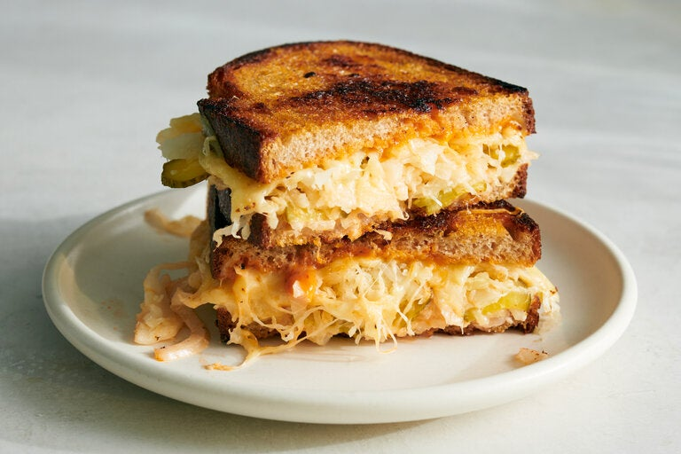

Vegetarian Reuben Sandwich

The Reuben sandwich — corned beef, sauerkraut, Swiss cheese and Russian dressing on rye bread — has inspired many meat-free versions.
Tempeh, seitan, vegetables and mushrooms have stood in for the corned beef, but they’re not really needed, because outsize quantities of the other
traditional elements make a punchy, gooey sandwich on their own. Both sides of the buttered rye get melted Swiss.
The mountain of sauerkraut doesn’t warm long enough to lose its crunch. The specks of pickles and onion in typical Russian dressing become layers
in the sandwich. And while the dressing has mayonnaise and ketchup, as usual, it also has coriander and black pepper to evoke corned beef’s brine,
plus hot sauce for kick. Because this rejiggered sandwich relies mostly on condiments and pantry staples, this homemade Reuben is within reach any day.
Ingredients (1 sandwich)
- 1tablespoon mayonnaise
- 1tablespoon ketchup
- ½teaspoon hot sauce, or to taste
- ¼teaspoon ground coriander
- Salt and pepper
- 2slices rye bread
- 2slices Swiss cheese
- ½tablespoon unsalted butter
- ¼cup thinly sliced white onion or shallot
- ½cup very well drained and squeezed sauerkraut
- 1dill pickle, sliced, or 2 dill pickle sandwich slices
Steps
- In a small bowl, stir together the mayonnaise, ketchup, hot sauce and coriander. Season with salt and pepper.
Taste and adjust pepper and hot sauce until the dressing is just a bit too intense, as it will be tamed by the sandwich fillings.
- Spread the dressing on both slices of bread. Reserve the bowl and any remaining dressing. Top each bread slice with a slice of Swiss cheese.
In a large skillet, melt the butter over medium-low. Add the bread, cheese side up. Swirl the bread slices around the skillet to mop up the butter.
Cover the skillet and cook until the cheese is melted and the bread is golden, 4 to 5 minutes. Meanwhile, add the onion and a pinch of salt to the
reserved bowl and stir to coat in the residual dressing.
- Top one slice of bread with the sauerkraut, pickles and onions. Flip the other slice on top of the fillings and press lightly to adhere.
Cook for just a minute on each side until the sandwich has melded. Cut and eat warm.